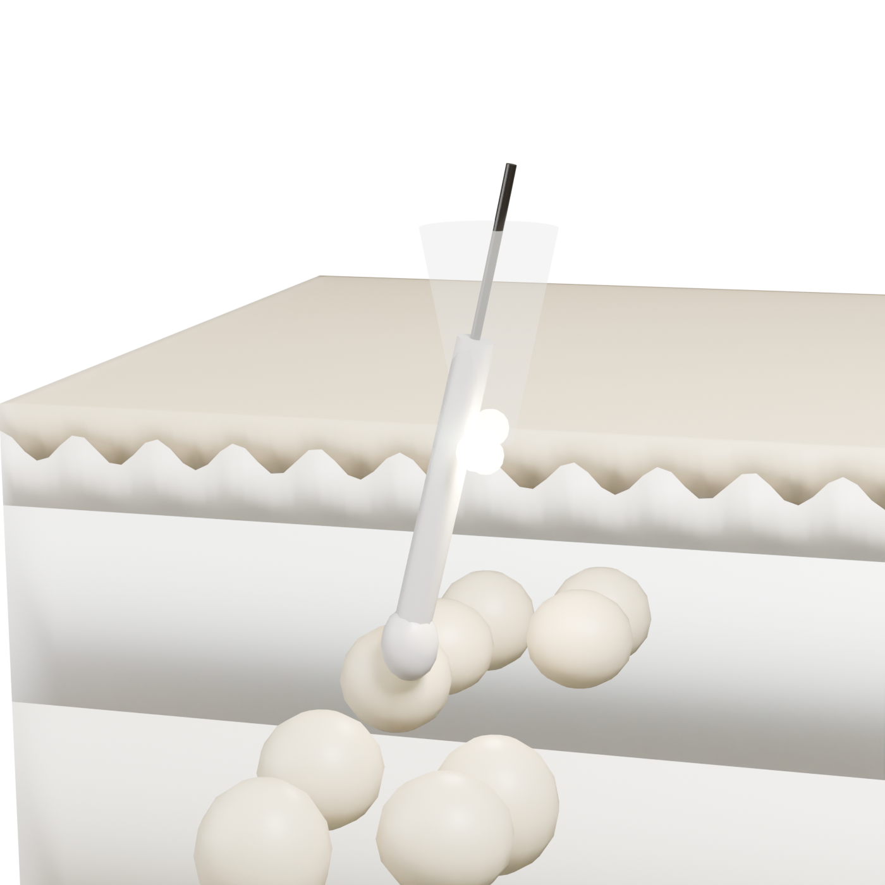

AviClear · 1726 nm laser
Clear skin,
3 months on.
Inside the circle: the same patch of forehead, before treatment.
Acne3 sessionsPhoto 3 months after the last
The forehead, same spot
Five red papules.
Three months later, none.
Before
3 months after the 3rd session
5
0
Each blue ring sits on one inflamed papule: a blocked oil gland gone red and swollen.
How AviClear works
It heats the oil gland,
not the surface.

Every visit, the same spot
Red papules,
visit by visit.
The same patch of forehead at each visit. The red papules clear first; the skin keeps clearing after the last session.